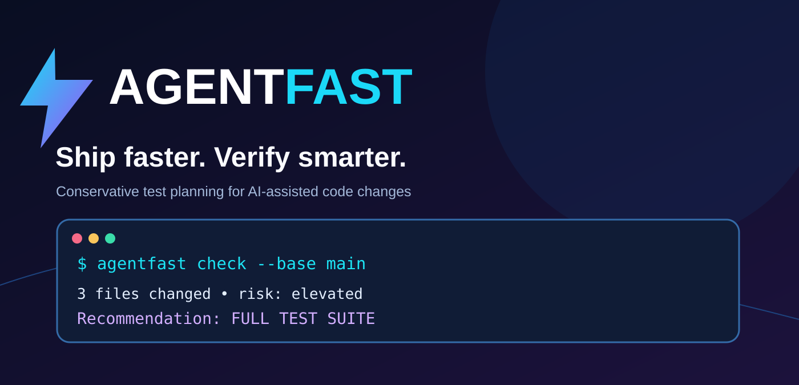

27 NOV 2026 · TARGET
0.7.1
Quality & Polish
Optional patch: verified fixes and usability improvements, only if meaningful changes are ready.
CONDITIONAL
Safe Git-change test guidance for JavaScript, TypeScript, React, Astro, and simple pnpm workspaces. Optional AST export hints; full required CI stays enabled.

Concept illustration; AgentFast recommends tests, it does not execute them.
Local analysis, transparent decisions, no remote source upload.
Changed, staged, unstaged, renamed and untracked files — from your existing repository.
Schema migrations, authentication, payments and configuration changes trigger more conservative checks.
Suggest directly and transitively related tests when a static dependency graph provides enough evidence.
Designed to work with Codex, Claude Code, GitHub Actions and regular development workflows.
Four deliberate milestones on the road to 1.0. Every release ships only when its code, tests and safety checks are ready — never just to fill a calendar.
Optional patch: verified fixes and usability improvements, only if meaningful changes are ready.
Richer import diagnostics, safer uncertainty handling and a broader regression suite.
Compatibility, tested integrations and independent beta evidence take priority.
A dependable supported baseline, contingent on real-world validation and safety gates.
Run the disposable demo, inspect two risk decisions and tell us what AgentFast got wrong. No signup, API key or positive review required.
How to get useful feedback from AI-generated code changes without confusing fewer tests with safer software.
Two reproducible scenarios, explainable risk policies, and what the current beta gets wrong.
Read the source, audit the logic and contribute improvements. Real contributors and independent feedback are welcome.